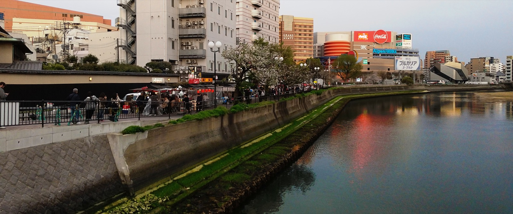
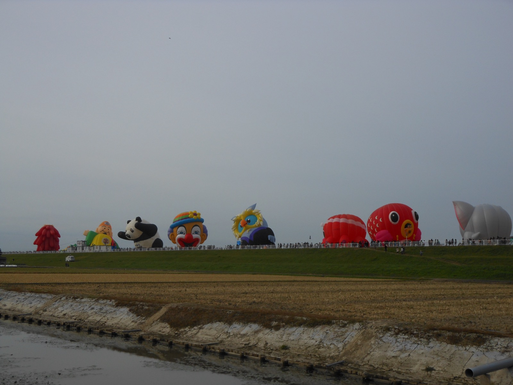
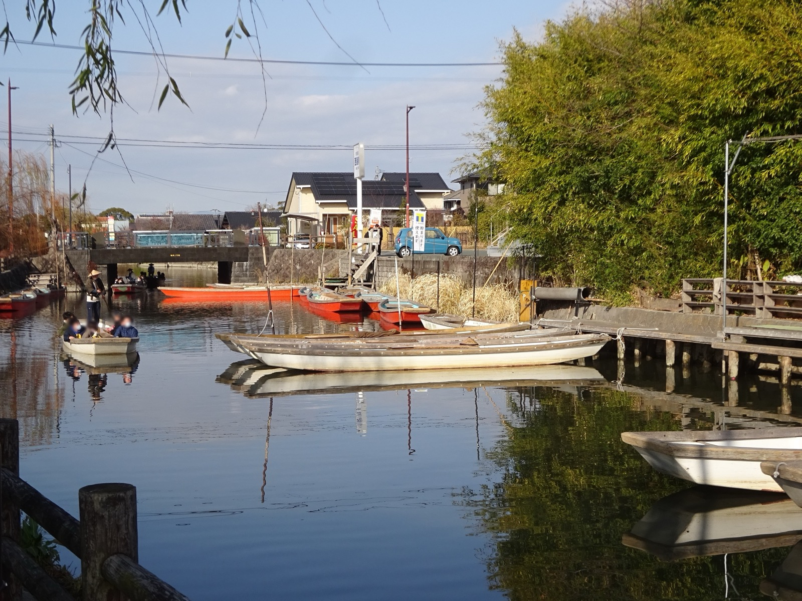
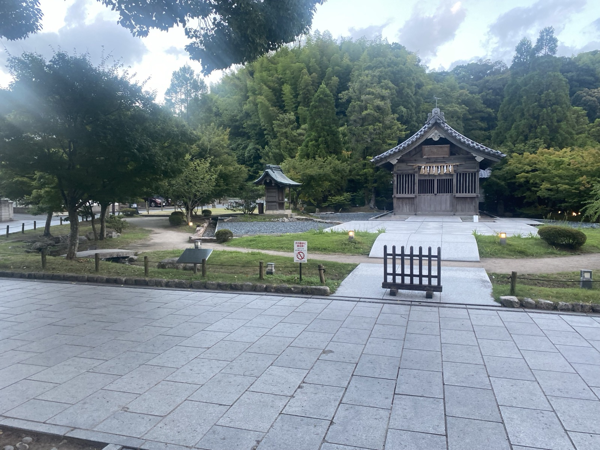
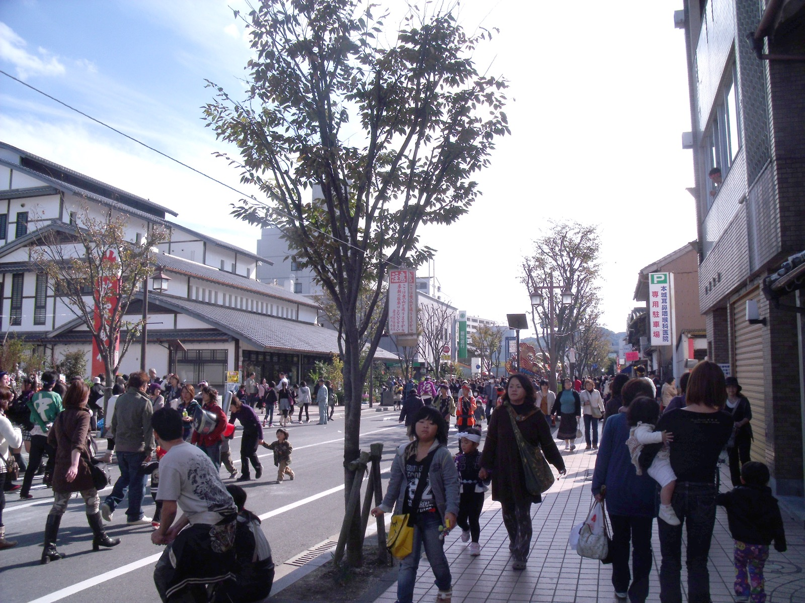
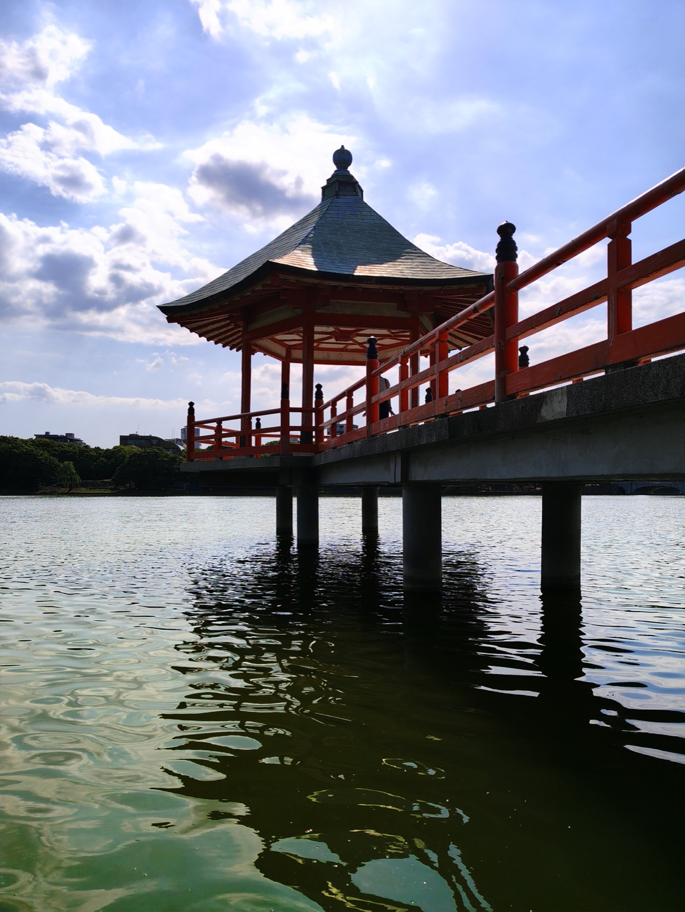

去程 UO668
10 月 30 日（五）
香港 HKG T2 11:05
福岡 FUK 國際線 15:10
經濟飛 · Fare Class U
長輩友善節奏，五晚連住博多，免搬行李。
進出皆搭 HK Express，飯店鄰近中洲川端與吳服町。
10 月 30 日（五）
香港 HKG T2 11:05
福岡 FUK 國際線 15:10
經濟飛 · Fare Class U
11 月 4 日（三）
福岡 FUK 國際線 12:50
香港 HKG T1 15:50
經濟飛 · Fare Class U
〒812-0024 福岡県福岡市博多区綱場町 8-29
步行數分鐘至地下鐵中洲川端站與吳服町站；計程車往返福岡機場約 15 分鐘。
選擇日期，只顯示當日行程、路線與預約連結。

機場往返以計程車為主，無需事前劃位。

熱氣球節期間才營業的JR 臨時站，位於佐賀市嘉瀬川河川敷（會場就在站旁）。出站後步行約 1 分即到會場。夾在鍋島站與久保田站之間，平日地圖上不一定找得到；2026 約 10/30–11/3 開設。週末開車易大塞車，建議全程搭 JR。
JR 特急指定席請提早網上劃位，亦可於博多站綠色窗口／指定席售票機辦理。網上「九州ネットきっぷ」博多→佐賀約 ¥1,300／人（指定席）。




Mandarake 福岡（大名，天神／赤坂步行數分）— 1F 有遊戲區，每日 12:00–20:00，品項最多、最好找。
BOOKOFF SUPER BAZAAR ミーナ天神（ミーナ天神 7F）— 10:00–21:00，二手主機／軟體方便掃貨。
Culture Arts（天神，專門レトロ）— 12:00–19:00，休一／四（祭日營業）；店面較小、愛好者向。
長輩可在天神地下街／咖啡廳休息；你獨自或輪流逛店約 1–1.5 小時即可，不影響晚上燒肉。
飯店 → 機場建議計程車；預留入境與安檢時間即可。
請在 config.js 填入 Google Maps API key 後重新整理。
config.js 的 GOOGLE_MAPS_API_KEYDay 1：福岡機場 → 飯店 → 中洲／川端通早期夜散策。
10 月底至 11 月初福岡天氣與行李清單（含長輩友善提醒）。
行程落在晚秋交界，平年約：
現金、支付方式與出發前訂位提醒。
三人 6 天建議約 ¥40,000–50,000（約 HK$2,000–2,600）。主要預留計程車、屋台、小店與備用；JR 網上票、川下り預約、水瀧鍋／和牛、連鎖店與 Mandarake 等多可刷卡。
若很習慣刷卡＋交通 IC，現金可減至約 ¥30,000，但仍建議留現金給屋台與少數只收現的車。
福岡多數計程車收現金、信用卡（Visa／Mastercard／JCB／Amex 等）、交通 IC（SUGOCA、nimoca、Suica 等；八達通不行），以及 PayPay／Alipay／WeChat Pay 等 QR。每台車不完全一樣，上車可問「カード大丈夫ですか？」或看車內標誌。
機場↔飯店這類車程，大公司車刷卡較齊；仍建議備 ¥3,000–5,000 現金以防萬一。用 GO／DiDi 叫車常可事先綁卡。
單程約 ¥2,100–2,500（約 HK$105–125），三人分攤每人約 HK$35–42，比接駁＋地鐵省時約 25 分鐘，免扛行李。
到「每日行程」選對應日子可看到當日預約連結；Day 2 水瀧鍋與 Day 5 和牛燒肉請另於網上預約餐廳。